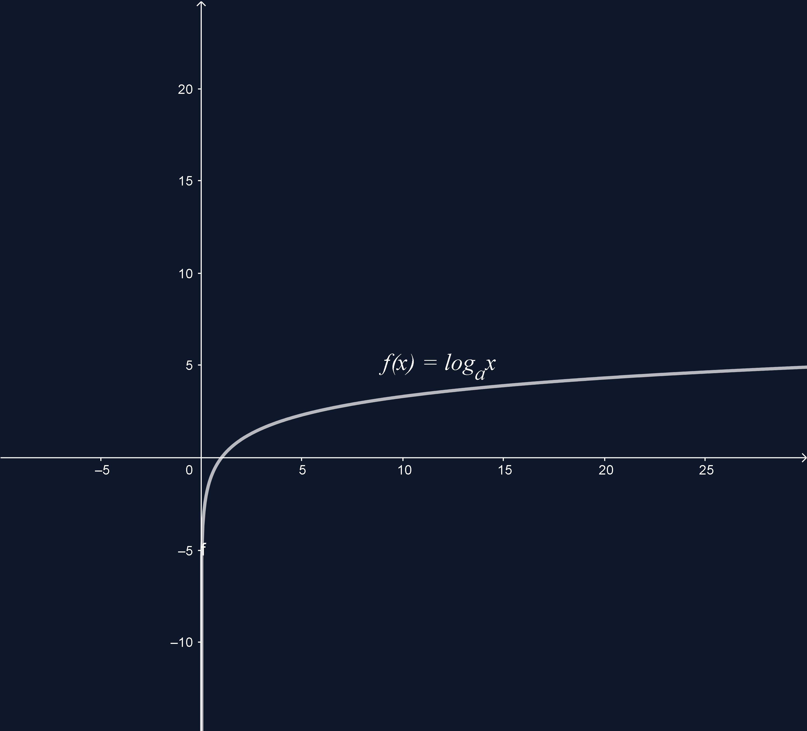

LOGARITMINĖS FUNKCIJOS
Funkcija y = f(x) = logax, čia a - skaičius, a > 0 ir a ≠ 1, vadinama logaritmine funkcija.
Logaritminé funkcija y =f(x) = logax visoje apibrėžimo srityje yra:
- didėjanti, kai a > 1:
- mažėjanti, kai 0 < a < 1
Logaritminės funkcijos y = f(x) = logax:
- apibrėžimo sritis yra intervalas (0; +∞)
- reikšmių sritis yra intervalas (-∞; +∞)
y = f(x) = log2x. y= g(x)= - logaritminės funkcijos.
